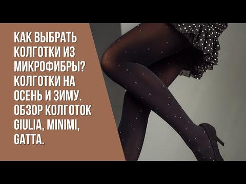

Как сочетать колготки с одеждой
Calzedonia показывает варианты сочетаний. Смотрите на цвет, обувь и пропорции комплекта.
CalzedoniaOfficial ↗Видеотека ТОНКО
Как ложится ткань, с чем сочетать рисунок и как появляется новая пара. Обзоры, примерки и звуки материала в одной подборке.
Выбрать видео ↓Бренд · На английском
Calzedonia показывает варианты сочетаний. Смотрите на цвет, обувь и пропорции комплекта.
CalzedoniaOfficial ↗Открыть на YouTube ↗Нажатие «Смотреть» подключает проигрыватель YouTube. Если видео не запускается, откройте оригинал по ссылке.
Найдите свой ракурс
Сохраните интересное, чтобы вернуться позже.
Ваша подборка останется в этом браузере.
В подборке: 11 видео
Calzedonia показывает варианты сочетаний. Смотрите на цвет, обувь и пропорции комплекта.
CalzedoniaOfficial ↗
Разбор Алёны Воронцовой о выборе колготок и их месте в гардеробе.
Alena Vorontsova ↗
Обзор колготок из микрофибры для осени и зимы. Впечатления автора о разных моделях.
JsEmotion BLOG ↗
Примерки и сочетания колготок с одеждой и обувью. В описании автор отмечает, что видео не спонсировано.
Luxury Content ↗
Короткий гид бренда по выбору плотности. Дополните просмотр нашей интерактивной мастерской DEN.
CalzedoniaOfficial ↗Алла Науменко разбирает выбор колготок: как сочетать цвета, плотность и одежду.
Алла Науменко ↗
Знакомство с прозрачными моделями из ассортимента бренда. Характеристики конкретной пары уточняйте в её карточке.
CalzedoniaOfficial ↗
Стилист Алина Гаянова отвечает на вопросы о выборе и сочетании колготок.
Алина Гаянова ↗Производство чулочного трикотажа в ролике канала Wolford Frederiksberg. Доступ к фабрике через видеорассказ.
Wolford Frederiksberg ↗
ASMR Fuyu исследует шорох ткани и прикосновения к микрофону. Формат без разговоров; начните с комфортной громкости.
ASMR Fuyu ↗
Распаковка старой упаковки и крупный план изделия на канале Miss Ruby ASMR.
Miss Ruby ASMR ↗Попробуйте другую тему или сократите запрос.
Это редакционная подборка, а не полный каталог YouTube. Новые обзоры и примерки появляются постоянно.
Найти ещё на YouTube ↗Под каждым видео указан канал. Названия, каналы, ссылки и превью сверены 16 ноября 2026 года. Видеофайлы не копируются на ТОНКО; доступность и возможность встраивания могут меняться.
Обзоры отражают опыт авторов, а брендовые ролики показывают ассортимент производителя. Для выбора размера и ухода сверяйтесь с карточкой изделия.
Перейти к мастерской выбора →